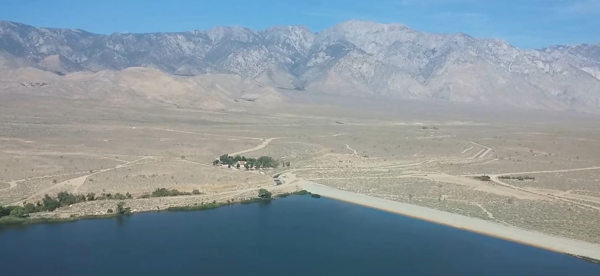
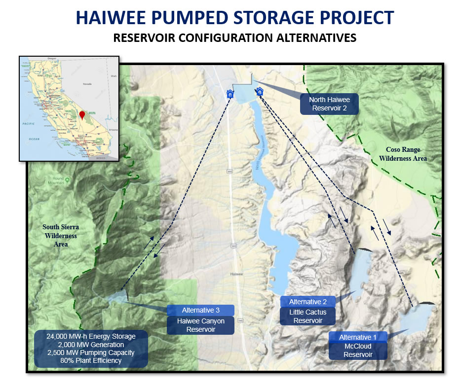
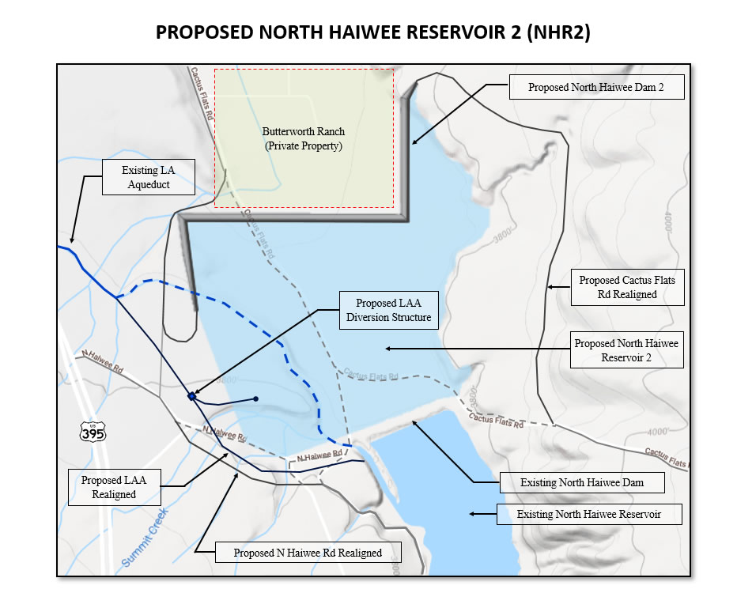
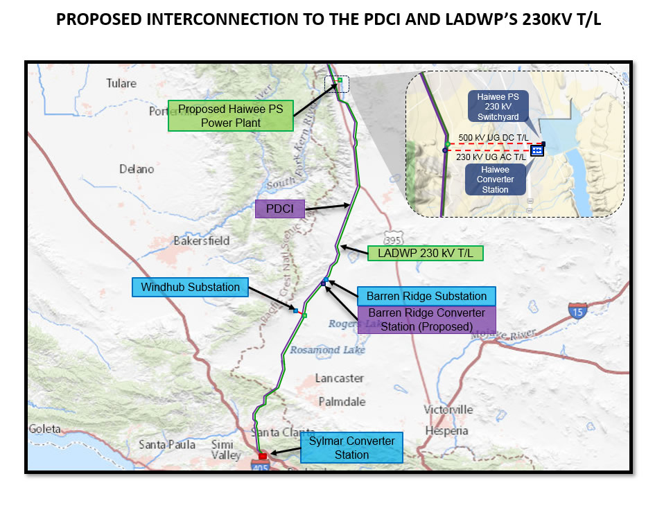

HPSP — Haiwee Pumped Storage Project
By Premium Energy Holdings, LLC. Engineering by Power-Tech Engineers, Inc. & WAPCOS Ltd. — Olancha, Inyo County, California.
Preliminary permit issued March 19, 2020
On March 19, 2020, the FERC issued the preliminary permit to Premium Energy Holdings, LLC (PEH), for a period effective the first day of the month in which the permit was issued (March 1, 2020). The purpose of a preliminary permit is to preserve the right of the permit holder to have first priority in applying for a license for the project under the Federal Power Act, allowing Premium Energy Holdings to conduct investigations and secure the necessary data to determine the feasibility of the project and to prepare a license application. The original permit was issued under docket number P-14991; the project is currently permitted under docket number P-15307.
1,600–2,000 MW south of Olancha, California
The proposed Haiwee Pumped Storage Project would be located 10 miles south of Olancha, California, in Inyo County. The project envisions a pumped storage power facility with capacity ranging from 1,600 MW to 2,000 MW. A new North Haiwee Reservoir 2, located upstream of the existing North Haiwee Reservoir, would serve as the lower pool. Upper pool alternatives require a new embankment west or east of the proposed reservoir:
- Alternative 1: A new McCloud Reservoir at 5,260 ft elevation
- Alternative 2: A new Little Cactus Reservoir at 4,980 ft elevation
- Alternative 3: A new Haiwee Canyon Reservoir at 6,160 ft elevation
The proposed North Haiwee Reservoir 2 would improve the seismic reliability of the existing North Haiwee Reservoir. Seismic studies have found the existing reservoir could potentially fail during a maximum credible earthquake — the dam's crest could settle and release a large volume of water, threatening public safety through hazardous flooding. The new dam would act as a backup dam to ensure the safety of nearby populations and improve reliability of the existing reservoir for water conveyance.
The plant would operate as a closed-loop pumped storage facility, without altering existing streams or the operation of the existing Haiwee Reservoirs. Reservoir filling would use water conveyed through the existing LA Aqueduct, and the connecting pipeline could regulate the aqueduct's water temperature — helping prevent ruptures in the aqueduct pipelines caused by temperature variations.
PEH licensing documents
Premium Energy Holdings, LLC develops and publishes documents throughout the licensing process. The following are associated with the Integrated Licensing Process (ILP).
The Federal Energy Regulatory Commission (FERC) issues documents related to the Haiwee Pumped Storage Project licensing, available on FERC's website using docket number P-15307 (original permit under P-14991).
- Director
- Victor Rojas
- Engineering
- PTE Inc. / WAPCOS Ltd.
- Regulatory Representative
- Maria Hernandez
- Media Public Affairs
- Vicki Rojas
- Land Representative
- Bruce Hammer
- Government Affairs
- Rod Clark
- Environmental Representative
- Bruce Hammer
- Stakeholders Outreach
- John Dennis
Project insight
Premium Energy Holdings, LLC invited the public to the Haiwee Pumped Storage Project Information Session, held via Zoom on Friday, November 6, 2020. The webinar recording and slides are now available to the public. We appreciate the public interest in this project.
Missed the presentation? No problem.
Details of the project are publicly presented. If you live near the proposed location, or are simply interested in what has been presented, we gladly receive your feedback and questions.
For further information, or to submit questions, please contact Maria Hernandez:
Pumped storage, explained
What is pumped-storage hydropower?
Please check out this video provided by the U.S. Department of Energy: What is Pumped-Storage Hydropower.
Why is pumped storage relevant to the U.S. power grid?
Currently, pumped storage accounts for around 95% of all utility-scale energy storage in the U.S. However, as stated by the Energy Information Administration (EIA), most of the pumped storage generators were built in the 1970s. The ever-increasing energy demand challenges electric utilities and investors to keep pace by developing long-term projects that help cover the electric demand. Besides providing energy supply, pumped storage also provides reliability to the grid.
What is the difference between open-loop and closed-loop pumped storage?
Closed-loop pumped storage projects have a lower and upper reservoir which are not connected to any other body of water (such as a river); the same water is repeatedly used in the charging and discharging process. Open-loop projects are connected to an ongoing stream of water, which is used in the charge/discharge process to store and deliver energy — storage capacity depends on the water available in the natural water feature.
What is the benefit of a closed-loop system over an open-loop system?
In general, closed-loop projects have less impact on aquatic resources. These impacts are primarily related to the initial reservoir filling process.
Why do we need energy storage?
Energy storage consists of collecting electrical energy when there is an excess of generation, and delivering it to the grid later. The most common large-scale energy storage is pumped storage, which can replace thermal generation, substitute the need for spinning reserve, or increase reliability and stability of the grid. It is also used to store energy from intermittent renewable sources such as solar or wind farms.
How can pumped storage help with renewable-energy integration?
Pumped storage facilities can help meet greenhouse gas emissions reduction targets and build clean renewable energy capacity. In addition, these plants enhance the reliability and stability of the grid.
Is pumped storage safe?
Any storage solution must comply with safety requirements in order to be sustainable. The main risk related to pumped storage facilities is dam safety: dam failure can affect downstream communities and the environment. Nevertheless, pumped hydro technology is mature, dam risks are generally well understood and managed, and the frequency of dam safety events is very low.
What is the lifespan of a pumped storage project?
Pumped storage hydro is a proven technology with a typical lifespan well over 50 years, and it is the most cost-effective solution for large-scale energy storage — compared to batteries, which currently last between 8 and 15 years.
Receive information on the progress of the project, future meetings, and answers to any question you may have.
The project, on the ground
Site photography and project maps for the Haiwee Pumped Storage Project. Click any image to enlarge.
{kind=link}

{kind=link}

{kind=link}

{kind=link}
